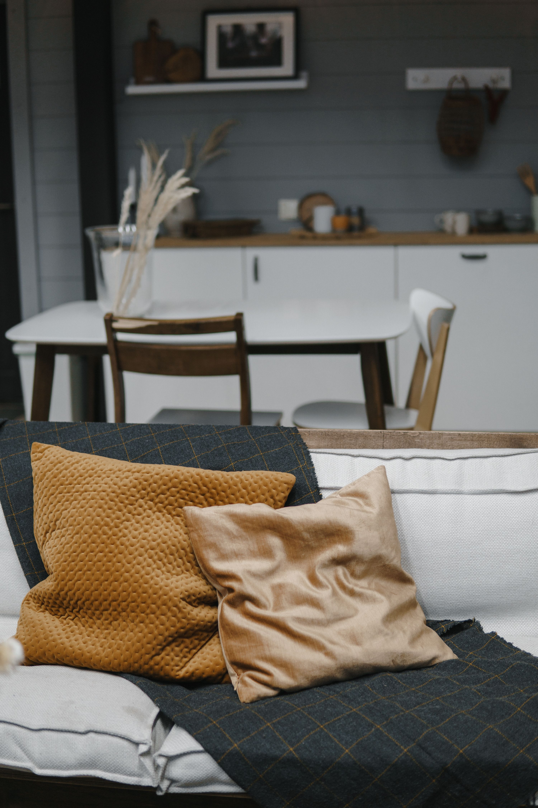
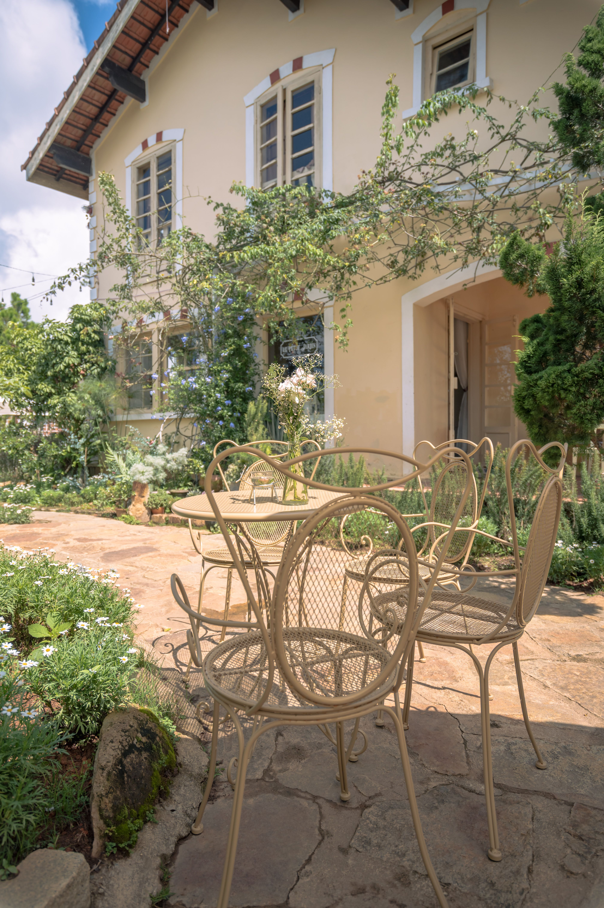

In This Article
- Introduction
- Start With the Atmosphere You Want to Create
- Use Color in Small, Intentional Ways
- Add Texture Through Everyday Objects
- Display Personal Objects Without Creating Clutter
- Improve Lighting to Change the Mood
- Use Art, Books, and Photographs With Intention
- Bring Nature Indoors
- Refresh Textiles and Small Accessories
- Create Focal Points in Ordinary Rooms
- Mix Old and New Pieces
- Give Each Room One or Two Memorable Details
- Avoid Common Decorating Mistakes
- Frequently Asked Questions
- Use Scent and Sound With Restraint
- Use Scent and Sound With Restraint
- Use Scent and Sound With Restraint
- Use Scent and Sound With Restraint
- Conclusion
Introduction
A home develops personality through the details that reflect the people who live there. You do not need to replace the furniture, repaint every wall, or follow a strict decorating style. Small changes in color, lighting, textiles, art, plants, books, and meaningful objects can make a room feel more personal without creating unnecessary expense.
The goal is not to fill every surface. Personality comes from intentional choices and repetition. A few objects with a story, one strong color used in several places, or a consistent mix of materials can make a home feel distinctive while keeping it calm and functional.
Start With the Atmosphere You Want to Create
Before buying accessories, decide how you want each room to feel. A living room may need to feel warm and social, while a bedroom may need to feel calm and restful. A kitchen can feel energetic and practical, and an entryway can feel organized and welcoming.
This emotional goal helps filter decisions. If you want a room to feel quiet, too many bright colors and decorative objects may work against that intention. If you want a space to feel lively, one or two stronger accents can be more effective than many unrelated items.
Look at what you already own before purchasing anything. You may already have artwork, books, textiles, ceramics, photographs, or small pieces of furniture that can be moved to another room and used more effectively.
Use Color in Small, Intentional Ways
Color can transform a room without major renovation. Cushion covers, throws, lampshades, small rugs, artwork, and decorative objects can introduce color with relatively little commitment. Choose a limited palette and repeat it in several places to create continuity.
You do not need to make every element match exactly. A room often feels more natural when different shades of the same color family appear across textiles, objects, and artwork. This creates depth without making the space look overly coordinated.
If the room already contains strong colors in furniture or flooring, use accessories to support rather than compete with them. Neutral backgrounds can make small colorful details more visible, while darker rooms may benefit from lighter accents that reflect some available light.
Add Texture Through Everyday Objects
Texture adds visual interest even when the color palette is simple. Wood, woven fibers, ceramics, glass, metal, linen-like fabrics, wool, and natural-looking finishes can make a room feel richer without requiring many objects.
Combine smooth and rough surfaces carefully. A glossy ceramic vase can look more interesting beside a woven basket or textured cloth. A wooden tray can soften a very modern table. The contrast should feel deliberate rather than random.
Texture is especially useful in neutral interiors. If a room uses mostly beige, white, gray, or earth tones, variation in materials prevents the space from feeling flat.

Display Personal Objects Without Creating Clutter
Photographs, travel souvenirs, handmade pieces, family objects, and inherited items can give a home character because they cannot be reproduced exactly in another house. The key is editing. Display a small number of meaningful objects and give them enough space to be noticed.
Group related items together instead of spreading them across every surface. Three photographs in similar frames can look more intentional than many unrelated frames placed around the room. A tray can organize small keepsakes and make them easier to clean around.
Rotate decorative objects periodically. You do not need to keep everything visible at the same time. Changing a few pieces by season or simply when you want a different atmosphere can refresh the room without buying anything new.
Improve Lighting to Change the Mood
Lighting strongly affects how colors, textures, and objects are perceived. A room lit only by one bright ceiling fixture may feel flat even when the decoration is attractive. Adding a floor lamp, table lamp, or wall light can create smaller zones and make the room feel more layered.
Use lighting according to activity. Reading areas need more focused light, while social areas may feel more comfortable with softer ambient illumination. Decorative lighting should never reduce visibility where practical tasks are performed.
Pay attention to bulb color temperature and brightness so different fixtures feel related. Excessive contrast between very cool and very warm light can make a room feel visually disconnected.
Use Art, Books, and Photographs With Intention
Artwork can define the personality of a room more quickly than many small accessories. Choose pieces you genuinely enjoy rather than items selected only because they match the sofa. Personal taste is what makes the space feel individual.
Scale matters. One larger artwork may have more impact than many tiny pieces spread across a large wall. If you prefer a gallery arrangement, plan the spacing before making holes. Paper templates can help you test the composition.

Books can also be decorative while remaining useful. Keep frequently used books accessible and combine horizontal and vertical arrangements on shelves. Avoid filling every shelf completely so there is some visual breathing room.
Bring Nature Indoors
Plants add color, shape, and life to a room. Choose species according to the actual light, temperature, and care you can provide. A healthy plant in the right place adds more personality than several plants struggling in unsuitable conditions.
Planters can reinforce the room's style through material and color. Repeating ceramic, terracotta, woven baskets, or simple neutral containers can create consistency even when the plant species differ.
If the room does not have suitable light for living plants, use other natural elements such as dried branches, wood, stone, or botanical artwork instead of forcing a plant into poor conditions.
Refresh Textiles and Small Accessories
Textiles are one of the easiest ways to change the feeling of a room. Cushion covers, throws, bedding, curtains, and rugs can introduce color and texture without replacing the main furniture.
Choose materials according to the way the room is used. In homes with children or pets, washable and durable fabrics may be more practical than delicate decorative textiles. Comfort should remain part of the design.
A small change can be enough. Replacing two cushion covers and moving an existing throw may create more visual improvement than purchasing many unrelated accessories.
Create Focal Points in Ordinary Rooms
A focal point gives the eye a clear place to rest. It can be an artwork, a distinctive lamp, an attractive mirror, a plant, a bookshelf, or a group of objects with strong visual unity.
Not every wall needs to compete for attention. Supporting areas can remain simpler so the focal point feels deliberate. This approach also helps reduce clutter.

Use the room's existing architecture when possible. A window, fireplace, niche, or interesting wall can become a focal point with very little additional decoration.
Mix Old and New Pieces
A home often feels more personal when not everything was purchased at the same time. Mixing newer furniture with second-hand, inherited, or vintage objects can create depth and make the space feel collected rather than staged.
Connection matters more than age. Different pieces can work together when they share a color, material, scale, or visual rhythm. A modern sofa can coexist with an older wooden table if the surrounding elements help relate them.
Inspect second-hand objects carefully before bringing them home. Check stability, damage, odors, and the amount of repair required. A low purchase price is not useful if restoration becomes unexpectedly expensive.
Give Each Room One or Two Memorable Details
You do not need many decorative statements. One unusual lamp, a large photograph, a distinctive chair, a handmade object, or an interesting color can be enough to give a room identity.
Choose details that make sense in the context of the household. A beautiful object that interferes with storage, circulation, or cleaning can become frustrating. Personality should support daily life rather than make it more difficult.
Repeat the same approach throughout the home without repeating the same object. For example, each room can contain one personal focal point and one natural material, creating a shared logic without making every room look identical.
Avoid Common Decorating Mistakes
One common mistake is buying many small objects because the room feels unfinished. This often creates visual noise without solving the real issue. Before buying accessories, check whether the room actually needs better lighting, improved furniture arrangement, or a stronger focal point.
Another mistake is copying a trend too literally. Trends can provide inspiration, but a home should still reflect the tastes and routines of the people living there. Use trends selectively and combine them with personal elements.
Finally, avoid covering every wall, shelf, and tabletop. Empty space is part of the composition. It allows meaningful objects to stand out and makes cleaning and organization easier.
Frequently Asked Questions
How can I give my home personality on a small budget?
Start by rearranging what you already own. Move artwork, books, textiles, and decorative objects between rooms, then add only the small details that are truly missing.
Do all rooms need to follow the same style?
No. Rooms can have different moods while still feeling connected through repeated colors, materials, or design principles.
How many decorative objects should I display?
There is no fixed number. Use enough to create interest while leaving visible space around them and keeping surfaces practical.
Can second-hand pieces work in a modern home?
Yes. Old and new pieces can work together when their proportions, colors, or materials relate to one another.
Use Scent and Sound With Restraint
Atmosphere is not only visual. A subtle room fragrance, fresh flowers, or the sound of a small speaker can contribute to a sense of personality. Keep fragrance light, especially in small rooms, because strong scents can become tiring or uncomfortable.
These sensory details should support the room rather than dominate it. The simplest approach is often the most effective: one pleasant scent, good ventilation, and a calm background are usually enough.
Use Scent and Sound With Restraint
Atmosphere is not only visual. A subtle room fragrance, fresh flowers, or the sound of a small speaker can contribute to a sense of personality. Keep fragrance light, especially in small rooms, because strong scents can become tiring or uncomfortable.
These sensory details should support the room rather than dominate it. The simplest approach is often the most effective: one pleasant scent, good ventilation, and a calm background are usually enough.
Use Scent and Sound With Restraint
Atmosphere is not only visual. A subtle room fragrance, fresh flowers, or the sound of a small speaker can contribute to a sense of personality. Keep fragrance light, especially in small rooms, because strong scents can become tiring or uncomfortable.
These sensory details should support the room rather than dominate it. The simplest approach is often the most effective: one pleasant scent, good ventilation, and a calm background are usually enough.
Use Scent and Sound With Restraint
Atmosphere is not only visual. A subtle room fragrance, fresh flowers, or the sound of a small speaker can contribute to a sense of personality. Keep fragrance light, especially in small rooms, because strong scents can become tiring or uncomfortable.
These sensory details should support the room rather than dominate it. The simplest approach is often the most effective: one pleasant scent, good ventilation, and a calm background are usually enough.
Conclusion
Giving a home personality does not require major renovation. Small choices in color, texture, lighting, art, plants, textiles, and meaningful objects can make each room feel more individual and welcoming.
The most effective approach is to edit rather than accumulate. Choose details with a clear purpose, repeat a few visual ideas, and allow personal objects to tell the story of the people who live there. A home feels distinctive when its details are intentional, useful, and genuinely connected to everyday life.